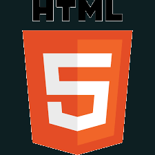
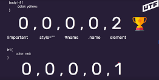
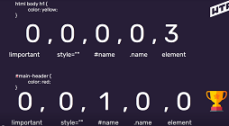
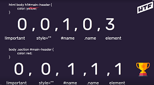

Lekcja 1 - Lekcja 03.01 Tydzień III + rozwiązania tydzień II
Znam narzędzie i używam. W przypadku szkolenia WTF panel kursanta jest jakąś namiastką tablicy kanban (w zakresie obejrzanych materiałów video). Trochę mi szkoda czasu na przekopiowywanie tytułów lekcji do tablicy. Może zastsouję do zadań?
< br >
znacznik nowej strony
znacznik samozamykający się
< b > wyróżniany_tekst < /b >
pogrubia tekst
brak znaczenia sematycznego (wyróżnik wizualny)
< strong > wyróżniany_tekst < /strong >
również pogrubia tekst
ale ma znaczenie semantyczne, podkreśla wysoką istotność i ważność frazy
wykorzystują to wyszukiwarki w czasie indeksowania strony
Pytanie na Slack'u
Adam Gruszczewski Apr 27th at 10:06 PM
pytanie o znaczniki < b > / < strong >.
wydaje mi się, że rozumiem różnicę.
tylko z punktu widzenia "oglądacza" strony to różnicy nie ma. widzę to samo. może ma to znaczenie przy automatach czytających stronę?
dlatego nasuwają mi się następujące pytania:
1. jak to w praktyce jest wykorzystywane?
2. jeżeli byśmy wzieli np. stronę sklepu, urzędu, trello gdzie powinno się zastosować znacznik < strong > zamiast < b >?
18 replies
Maciek Korsan 6 days ago
to tak jak z każdym innym znacznikiem, można ostylować je tak że dla “oglądacza” nie ma różnicy, różnica jest dla wyszukiwarki / czytników
Maciek Korsan 6 days ago
dlatego mocno trzeba kłaść na to nacisk żeby używać semantycznych znaczników najpierw
Maciek Korsan 6 days ago
a później zastanawiać się nad wyglądem
Maciek Korsan 6 days ago
to co dostajemy jako pogrubiony tekst to efekt domyślnych stylów przeglądarki
Maciek Korsan 6 days ago
jak wszystko zresetujesz, to każdy tekst może wyglądać tak samo i bez zapisu czystego htmla nie będziesz w stanie stwierdzić co jest co :slightly_smiling_face:
Adam Gruszczewski 6 days ago
to zapytam od drugiej strony. skoro < b > jest "mniej wartościowy" to po co go utrzymywać? tylko dla zgodności?
Karol Ryska 6 days ago
Może jest to kwestia kompatybilności wstecznej?
Adam Gruszczewski 6 days ago
Tak też myślę. Ale mnogość bytów nie ułatwia życia.
Maciek Korsan 6 days ago
no nie ułatwia
Maciek Korsan 6 days ago
ale służy do wizualnego pogrubienia
Maciek Korsan 6 days ago
i łatwo z niego korzystać jak mamy np edytor w którym user uzupełnia treść
Maciek Korsan 6 days ago
i dostajemy później taki html
Mariusz Badyński 6 days ago
Ale zatem nie korzystać z < b >, < i >?
Adam 6 days ago
A ja zapytam inaczej - czy z doświadczenia jako developer zawsze używasz semantycznych < strong > i < em > czy jednak czasem rekomendujesz użycie < b > i < i >?
Maciek Korsan 6 days ago
staram sie uzywac strong i em ale czasem wychodzi stara natura i leci b i i
Maciek Korsan 6 days ago
wszystko zależy od konstekstu
Maciek Korsan 6 days ago
czasem robię ten efekt span em po prostu
Maciek Korsan 6 days ago
to co promuję od jakiegoś czasu i staram się trzymać to super semantyczny html
< i > wyróżniany_tekst < /i >
kursywa, brak znaczenia sematycznego (wyróżnik wizualny)
< em > wyróżniany_tekst < /em >
ma znaczenie semantyczne, podkreśla, że tekst może mieć inne znaczenie (np. ironia)
< a href="" target="" > opis_łącza < /a >
jeżeli href="https://cotenfrontend.pl/" to utworzymy złęcze zewnętrzne
jeżeli href="#notatki" to utworzymy złęcze wewnętrzne (skok do tagu z id "notatki")
< nav > < /nav >
zawiera listę linków do podstron
znacznik umieszczamy w header poza main (header ten będzie powtarzalny; roboty indeksujące nie będą tego widziały)
dobrą praktyką jest, żeby menu anwigacyjne nie zmieniało sie przy przejściu pomiedzy stronami
< img src="" alt="" >
src - zawiera url obrazka do wyświetlenia
alt - tekst alternatywny
znacznik samozamykający

atrybuty tag'ów są niewidzialne, schowane w znaczniku
nadają elementom dodatkowe własności (alt)
pozwalają na gruopowanie elementów (class)
pozwalają na identyfikowanie elementów (id)
lista atrybutów
nazwy w kodzie:
- bez polskich znaków
- bez spacji
- angielski
- pilnować schemtu
konwencje:
- camelCase (mySuperBoldHeader)
- kebab-case (my-super-bold-header)
- snake_case (my_super_bold_header)
- PascalCase (MySuperBoldHeader)
- atrybut style dla każdego elementu (znacznika); inline style
- można stylować po:
-- elementach (znacznikach)
-- klasach
< znacznik class="class-name" > treść </ znacznik >
odwołanke w css: .class-name {...}
. (kropka) - selektor klasy
nazwa klasy zapisana kebab-case
-- identyfikatorach
< znacznik id="id" > treść </ znacznik >
odwołanke w css: #id {...}
# (hasz) - selektor klasy
id musi być unikalne na stronie
- łączenie selektorów: nav a {...} - style zaaplikują się tylko do elementów a wystepujących w elemnecie nav
- !important - nadpisuje style; nie stosować!
- specyficzność w css (15:20)
-- priorytety stylowania: | !important | style="" | #id-name | .class-name | element |



-- jeżeli specyficzność jest taka sama wygrywa ten styl, który jest bliżej elementu stylowanego
-- jeżeli w definicji stylu wpiszemy 2x ten sam atrybut to wygra ten, który jest bliżej elementu stylowanego